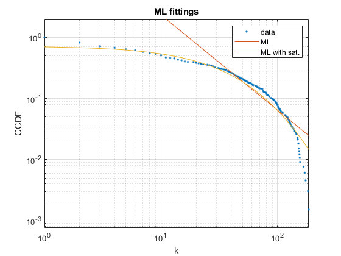

Contents
close all
clear all
clc
G = csvread('Adj.csv',1,1);
party_name = readtable("party_name.csv");
party_name = party_name(:,2);
ideas_name = readtable("Ideas_name.csv");
ideas_name = ideas_name(:,2);
full_name = vertcat(party_name,ideas_name);
N = max(size(G));
A = sparse(G);
clear G;
pre-processing
Au = 1*(A+A'>0);
Au = Au - diag(diag(Au));
pos = find(sum(Au)~=0);
A = A(pos,pos);
Au = Au(pos,pos);
full_name = full_name(pos,1);
spy(Au);
%%%%%%%%%%%%%%%%% EXTRACT THE DISTRIBUTION %%%%%%%%%%%%%%%%%%%%%%%%%
N = size(A,1);
display("Number of Nodes= "+N)
d = full(sum(A));
Links_num = sum(d);
display("Total number of links= "+Links_num)
k = unique(d);
pk = histc(d,k)';
pk = pk/sum(pk);
Pk = cumsum(pk,'reverse');
klog = 10.^(0:0.1:ceil(log10(max(k))));
pklog = histc(d,klog)';
pklog = pklog/sum(pklog);
"Number of Nodes= 656"
"Total number of links= 18778"
%%%%%%%%%%%%%%%%% MOMENTS OF DEGREE DISTRIBUTION %%%%%%%%%%%%%%%%%%%%
Mean_D = mean(d);
display("First Moment of prob. distribution= "+Mean_D)
Var_D = var(d);
display("Second Moment of Prob. distribution= "+Var_D)
Skew_D = skewness(d);
display("Third Moment of Prob. distribution= "+Skew_D)
"First Moment of prob. distribution= 28.625"
"Second Moment of Prob. distribution= 1500.079"
"Third Moment of Prob. distribution= 1.7576"
%%%%%%%%%%%%%%%%%%%%%%%% SHOW THE RESULTS %%%%%%%%%%%%%%%%%%%%%%%%%%%
figure(2)
subplot(2,2,1)
plot(k,pk,'.')
grid
xlabel('k')
ylabel('PDF')
title('linear PDF plot')
subplot(2,2,2)
loglog(k,pk,'.')
grid
xlabel('k')
ylabel('PDF')
title('logarithmic PDF plot')
subplot(2,2,3)
loglog(klog,pklog,'.')
grid
xlabel('k')
ylabel('PDF')
title('logarithmic PDF plot (log bins)')
subplot(2,2,4)
loglog(k,Pk,'.')
grid
xlabel('k')
ylabel('CCDF')
title('logarithmic CCDF plot')
%%%%%%%%%%%%%%%%% PURE ML FITTING %%%%%%%%%%%%%%%%%%%%%%%%%
kmin = 40;
d2 = d(d>=kmin);
ga = 1+1/mean(log(d2/kmin));
disp(['gamma ML = ' num2str(ga)])
gamma ML = 2.5565
%%%%%%%%%%%%%%%%% ML FITTING WITH SATURATION %%%%%%%%%%%%%%%%%%
d1=d(d>30);
for ks = 1:max(k)
kmin = min(d1);
tmp = mean(log((d1+ks)/(kmin+ks)));
ga2(ks) = 1+1/tmp;
de(ks) = log(ga2(ks)-1)-log(kmin+ks)-ga2(ks)*tmp;
end
[~,ks] = max(de);
disp(['k_sat ML sat = ' num2str(ks)])
disp(['gamma ML sat = ' num2str(ga2(ks))])
k_sat ML sat = 185
gamma ML sat = 6.6197
%%%%%%%%%%%%%%%%% SHOW THE RESULTS %%%%%%%%%%%%%%%%%%%%%%%%%
figure(5)
loglog(k,Pk,'.')
hold on
s1 = k.^(1-ga);
loglog(k,s1/s1(40)*Pk(40));
s1 = ((k+ks)/(kmin+ks)).^(1-ga2(ks));
loglog(k,s1*exp(-1.2))
hold off
axis([xlim min(Pk/2) 2])
grid
xlabel('k')
ylabel('CCDF')
title('ML fittings')
legend('data','ML','ML with sat.')

%%%%%%%%%%%%%%%%%%%%%%%%%% ASSORTATIVITY %%%%%%%%%%%%%%%%%%%%%%%%%
k_tmp = (A*d')./d';
u = unique(d');
for k = 1:length(u)
k_nn(k) = mean(k_tmp(d'==u(k)));
end
p = polyfit(log(u'),log(k_nn),1);
disp(['Assortativity factor =' num2str(p(1))])
Assortativity factor =0.18504
%%%%%%%%%%%%%%%%% SHOW RESULTS %%%%%%%%%%%%%%%%%%%%%%%%%
figure(6)
loglog(d,k_tmp,'g.');
hold on
loglog(u,exp(p(2)+log(u)*p(1)),'r-');
loglog(u,k_nn,'k.');
hold off
grid
xlabel('k')
ylabel('k_{nn}')
title('Assortativity of the Collaboration Network')

%%%%%%%%%%%%%%% CLUSTRING COEFFICIENT 1 %%%%%%%%%%%%%%%%%%%%%%
cn = diag(full((Au*triu(Au)*Au)));
Ei = zeros(size(d));
Ei = cn(d>1).';
C1 = 2*Ei./d(d>1)./(d(d>1)-1);
Cave1 = sum(C1)/N;
%%%%%%%%%%%%%% CLUSTRING COEFFICIENT 2 %%%%%%%%%%%%%%%%%%%%%%
for i=1:length(Au)
str(i).child = find(Au(i,:)>0);
end
N = length(Au);
deg = sum(Au(:,:));
for i=1:N
adjn = Au(str(i).child,str(i).child);
E(i) = sum(sum(adjn))/2;
if deg(i)==1 | deg(i)==0
C(i) = 0;
else
C(i) = 2*E(i)/deg(i)/(deg(i)-1);
end
end
C = full(C);
Cave2 = sum(C)/N;
disp(['Average Clustering Coefficient = ' num2str(Cave2)])
Average Clustering Coefficient = 0.44409
CLUSTRING COEFFICIENT PROB. DISTRIBUTION
s = unique(C);
Cpk = histc(C,s)';
Cpk = Cpk/sum(Cpk);
CPk = cumsum(Cpk,'reverse');
figure(7);
plot(s,CPk,'+');
xline(Cave2,'r--',{'Average Clustring Coefficient'});
grid
xlabel('Clustrring Coefficient')
ylabel('CCDF')
title('Clustring Coefficient CCDF')
%%%%%%%%%%%%%%%%%%%%%%% ROBUSTNESS %%%%%%%%%%%%%%%%%%%%%%%%
Inhomogeneity Ratio:
inhom_Ratio = mean(d.^2)./mean(d);
disp(['The Inhomogeneity Ratio = ' num2str(inhom_Ratio)])
Robustness for Random Attack failure
Au_update = Au;
Rand_inhom_Ratio = mean(d.^2) ./ mean(d);
for i = 1:N-1
j = ceil((N-i)*rand)+1;
Au_update(:,j) = [];
Au_update(j,:) = [];
d_update = full(sum(Au_update));
mom2_k = mean(d_update.^2);
mom1_k = mean(d_update);
Rand_inhom_Ratio_update = mom2_k ./mom1_k;
Rand_inhom_Ratio = [Rand_inhom_Ratio Rand_inhom_Ratio_update];
end
Robustness for Attacks (Adversary which removes all hubs first)
Au_update = Au;
Attack_inhom_Ratio = mean(d.^2) ./ mean(d);
for i = 1:N-1
[hub_degree,hub_index] = max(d_update);
j = hub_index;
Au_update(:,j) = [];
Au_update(j,:) = [];
d_update = full(sum(Au_update));
mom2_k = mean(d_update.^2);
mom1_k = mean(d_update);
Attack_inhom_Ratio_update = mom2_k ./mom1_k;
Attack_inhom_Ratio = [Attack_inhom_Ratio Attack_inhom_Ratio_update];
end
figure(8);
loglog(Rand_inhom_Ratio,'-.');
hold on
loglog(Attack_inhom_Ratio,'g-.');
hline = refline([0 2]);
hline.Color = 'r';
hline.LineWidth = 1;
hold off
grid;
legend('Random failure','Attacks','Molly-Reed criteria');
xlabel('k');
ylabel('<K^2> / <K> ');
title('Robustness');
The Inhomogeneity Ratio = 80.9496
%%%%%%%%%%%%%%%%% Community Detection %%%%%%%%%%%%%%%%%%%%%%%
G = csvread('gauss_Adj.csv',1,1);
N = max(size(G));
B = sparse(G);
clear G;
Bu = 1*(B+B'>0);
Bu = Bu - diag(diag(Bu));
pos = find(sum(Bu)~=0);
B = B(pos,pos);
Bu = Bu(pos,pos);
N = size(Bu,1);
d = full(sum(Bu));
D = sum(d);
I = spdiags(ones(N,1),0,N,N);
Di = spdiags(1./sqrt(d'),0,N,N);
L = I - Di*Bu*Di;
M = Bu*Di*Di;
%%%%%%%%%%%%%%%%%%%%%%% spectral approach %%%%%%%%%%%%%%%%%%%%%%
[V,DD] = eigs(L,6,'SA');
Vv = Di*V;
v1 = Vv(:,2)/norm(Vv(:,2));
[v1s,pos] = sort(v1,'descend');
Bu1 = Bu(pos,pos);
a = sum(triu(Bu1));
b = sum(tril(Bu1));
assoc = cumsum(a+b);
assoc = min(assoc,D-assoc);
cut = cumsum(b-a);
conduct = cut./assoc;
conduct = conduct(1:end-1);
[~,mpos] = min(conduct);
threshold = mean(v1s(mpos:mpos+1));
disp([' '])
disp('spectral approach')
disp([' Minimum conductance: ' num2str(conduct(mpos))])
disp([' Cheeger''s upper bound: ' num2str(sqrt(2*DD(2,2)))])
disp([' # of links: ' num2str(D/2)])
disp([' Cut value: ' num2str(cut(mpos))])
disp([' Assoc value: ' num2str(assoc(mpos))])
disp([' Community size #1: ' num2str(mpos)])
disp([' Community size #2: ' num2str(N-mpos)])
disp([' '])
spectral approach
Minimum conductance: 0.50045
Cheeger's upper bound: 1.4148
# of links: 619941
Cut value: 310249
Assoc value: 619941
Community size #1: 557
Community size #2: 557
%%%%%%%%%%%%%%%%%%%%%%%%% Kmean Approach %%%%%%%%%%%%%%%%%%%%%%%%%%
LRC = kmeans(V(:,1:3),3);
disp([' '])
disp('Kmean approach')
disp(" Community size #1: "+sum(LRC == 1))
disp(" Community size #2: "+sum(LRC == 2))
disp(" Community size #3: "+sum(LRC == 3))
silhouette(V(:,1:3),LRC)
Kmean approach
Community size #1: 278
Community size #2: 773
Community size #3: 63
%%%%%%%%%%%%%% Sovrapposition clustering and manual communities
comt = readtable("community_truth.csv");
comt = table2array(comt(:,2));
err=0;
for i = 1:length(LRC)
if comt(i)~=LRC(i)
err=err+1;
end
end
disp("Sovrapposition cluster and manually computed communities=" + (1-err/length(LRC)))
Sovrapposition cluster and manually computed communities=0.1912
%%%%%%%%%%%%%%%%%%%%%%%%%% PageRank-nibble approach %%%%%%%%%%%%%%%%%
if mpos<N-mpos
i = pos(1);
else
i = pos(end);
end
q = zeros(N,1);
q(i) = 1;
c = 0.85;
r = (I-c*M)\((1-c)*q);
ep = 1e-3;
u = zeros(N,1);
v = q;
th = full(ep*d/D)';
count = 0;
complexity = 0;
ii = i;
while (count<N)
if v(ii)>th(ii)
tmp = v(ii);
u(ii) = u(ii)+(1-c)*tmp;
v(ii) = 0;
v = v + c*M(:,ii)*tmp;
complexity = complexity + d(ii);
count = 0;
else
count = count + 1;
ii = mod(ii,N)+1;
end
end
[u1s,pos2] = sort(u,'descend');
Nmax = find(u1s>0,1,'last');
Bu1 = Bu(pos2,pos2(1:Nmax));
a = sum(triu(Bu1));
b = sum(tril(Bu1));
assoc = cumsum(a+b);
assoc = min(assoc,D-assoc);
cut = cumsum(b-a);
conduct = cut./assoc;
conduct = conduct(1:Nmax-1);
[~,mpos2] = min(conduct);
threshold2 = mean(u1s(mpos2:mpos2+1));
disp('PageRank-nibble approach')
disp([' complexity/D: ' num2str((complexity/D))])
disp([' epsilon: ' num2str(ep)])
disp([' prec: ' num2str(norm(r-u,1))])
disp([' Minimum conductance: ' num2str(conduct(mpos2))])
disp([' # of links: ' num2str(D/2)])
disp([' Cut value: ' num2str(cut(mpos2))])
disp([' Assoc value: ' num2str(assoc(mpos2))])
disp([' Community size #1: ' num2str(mpos2)])
disp([' Community size #2: ' num2str(N-mpos2)])
figure(9)
plot(conduct)
grid
ylabel('conductance')
title('sweep choice')
figure(10)
plot(u,v1,'k.')
hold on
plot(threshold2*[1,1],ylim,'g-')
plot(xlim,threshold*[1,1],'r-')
hold off
grid
ylabel('Fiedler''s eigenvector value')
xlabel('PageRank value')
title('communities')
PageRank-nibble approach
complexity/D: 23.8384
epsilon: 0.001
prec: 0.00047369
Minimum conductance: 0.50045
# of links: 619941
Cut value: 310249
Assoc value: 619941
Community size #1: 557
Community size #2: 557
Community identified by connected components in our disconnected graph
G = graph(Au);
[bins,binsizes] = conncomp(G);
mask=(bins==1);
figure(11);
plot(G)
part_A=Au(mask,mask);
Clustering on biggest connected component%%
N = size(part_A,1);
d = full(sum(part_A));
D = sum(d);
I = spdiags(ones(N,1),0,N,N);
Di = spdiags(1./sqrt(d'),0,N,N);
L = I - Di*part_A*Di;
M = part_A*Di*Di;
spectral approach on part_A
[V,DD] = eigs(L,6,'SA');
Vv = Di*V;
v1 = Vv(:,2)/norm(Vv(:,2));
[v1s,pos] = sort(v1,'descend');
Au1 = part_A(pos,pos);
a = sum(triu(Au1));
b = sum(tril(Au1));
assoc = cumsum(a+b);
assoc = min(assoc,D-assoc);
cut = cumsum(b-a);
conduct = cut./assoc;
conduct = conduct(1:end-1);
figure(12)
plot(conduct,'x-')
grid
title('conductance')
[~,mpos] = min(conduct);
threshold = mean(v1s(mpos:mpos+1));
disp([' '])
disp('spectral approach')
disp([' Minimum conductance: ' num2str(conduct(mpos))])
disp([' Cheeger''s upper bound: ' num2str(sqrt(2*DD(2,2)))])
disp([' # of links: ' num2str(D/2)])
disp([' Cut value: ' num2str(cut(mpos))])
disp([' Assoc value: ' num2str(assoc(mpos))])
disp([' Community size #1: ' num2str(mpos)])
disp([' Community size #2: ' num2str(N-mpos)])
disp([' '])
disp('spectral approach')
disp("based only on sign of Fiedler's vector")
disp([' Community size #1: ' num2str( sum(v1>0))])
disp([' Community size #2: ' num2str(sum(v1<0))])
disp([' '])
spectral approach
Minimum conductance: 0.11111
Cheeger's upper bound: 0.32749
# of links: 9356
Cut value: 1
Assoc value: 9
Community size #1: 5
Community size #2: 597
spectral approach
based only on sign of Fiedler's vector
Community size #1: 47
Community size #2: 555
%%%%%%%%%%%%%%% PageRank-nibble approach for the biggest component %%%%
if mpos<N-mpos
i = pos(1);
else
i = pos(end);
end
q = zeros(N,1);
q(i) = 1;
c = 0.85;
r = (I-c*M)\((1-c)*q);
ep = 1e-3;
u = zeros(N,1);
v = q;
th = full(ep*d/D)';
count = 0;
complexity = 0;
ii = i;
while (count<N)
if v(ii)>th(ii)
tmp = v(ii);
u(ii) = u(ii)+(1-c)*tmp;
v(ii) = 0;
v = v + c*M(:,ii)*tmp;
complexity = complexity + d(ii);
count = 0;
else
count = count + 1;
ii = mod(ii,N)+1;
end
end
[u1s,pos2] = sort(u,'descend');
Nmax = find(u1s>0,1,'last');
Bu1 = Bu(pos2,pos2(1:Nmax));
a = sum(triu(Bu1));
b = sum(tril(Bu1));
assoc = cumsum(a+b);
assoc = min(assoc,D-assoc);
cut = cumsum(b-a);
conduct = cut./assoc;
conduct = conduct(1:Nmax-1);
[~,mpos2] = min(conduct);
threshold2 = mean(u1s(mpos2:mpos2+1));
disp('PageRank-nibble approach')
disp([' complexity/D: ' num2str((complexity/D))])
disp([' epsilon: ' num2str(ep)])
disp([' prec: ' num2str(norm(r-u,1))])
disp([' Minimum conductance: ' num2str(conduct(mpos2))])
disp([' # of links: ' num2str(D/2)])
disp([' Cut value: ' num2str(cut(mpos2))])
disp([' Assoc value: ' num2str(assoc(mpos2))])
disp([' Community size #1: ' num2str(mpos2)])
disp([' Community size #2: ' num2str(N-mpos2)])
figure(13)
plot(conduct)
grid
ylabel('conductance')
title('sweep choice')
figure(14)
plot(u,v1,'k.')
hold on
plot(threshold2*[1,1],ylim,'g-')
plot(xlim,threshold*[1,1],'r-')
hold off
grid
ylabel('Fiedler''s eigenvector value')
xlabel('PageRank value')
title('communities')
PageRank-nibble approach
complexity/D: 20.5076
epsilon: 0.001
prec: 0.00048918
Minimum conductance: -35.0769
# of links: 9356
Cut value: 18240
Assoc value: -520
Community size #1: 32
Community size #2: 570
Page rank
n=size(A,1);
e=ones(n,1);
oo=1./sum(A);
oo(oo==Inf)=0;
D=diag(oo);
Ad=sparse(A*D);
eAd=sparse(e'*Ad);
check=1;
iter=0;
v=sparse((1/n).*ones(n,1));
toll=1e-4;
alpha=0.85;
toll=0.0001;
while check>toll
vold=v;
v=alpha*Ad*vold+1/n*(1-alpha*eAd*vold)*e ;
check=sum(abs(v-vold));
iter=iter+1;
end
pr=v;
%%%%%%%%%%%%%%%%%%%% Show page rank results %%%%%%%%%%%%%%%%%%%%%%%
[spr,per]=sort(pr,'descend');
result = table;
result.Parties_name=full_name(per,1);
result.PageRank=spr;
result.Degree = sum(A,2);
result(1:25,:)
ans =
25×3 table
Parties_name PageRank Degree
x
_________________________________________________________________________ _________ ______
'Social Democratic Party' 0.0072297 2
'Democratic Peasants’ Party of Germany' 0.0071579 28
'Human Shield' 0.0064549 15
'Latvian Farmers’ Union' 0.0064145 65
'Geneva Citizens' Movement' 0.0063279 1
'Alliance of Free Democrats' 0.0061446 7
'Popular Unity' 0.0060599 10
'Portuguese Communist Party' 0.005937 4
'None-of-the-above' 0.0059335 46
'Homeland Union - Lithuanian Christian Democrats' 0.0059093 65
'Direction-Social Democracy' 0.0058928 27
'Alliance of the Christian Democratic People's Front' 0.0058324 80
'Radical Political Party' 0.0057698 7
'Blue Coalition' 0.0057555 42
'Key Coalition' 0.0056872 36
'Francophone Christian Social Party and Flemish Christian People’s Party' 0.0056668 3
'Communist Party of Spain' 0.0056051 13
'Democratic Intervention' 0.0055033 13
'People's Party' 0.0052936 10
'Centre Democrats' 0.0052826 39
'Coalition of Bulgarian Socialist Party' 0.0052583 60
'Aleksandar Vucic - The future in which we believe' 0.0052325 70
'Democratic Party' 0.0051644 52
'Lithuanian Peasants Party' 0.0051374 50
'Belgian Socialist Party' 0.0051245 5
Using the function fun_kryl.m compute the total comunicability of every node
addpath('.\funm_kryl\')
param.function = @expm;
param.restart_length = 10;
param.max_restarts = 50;
param.hermitian = 0;
param.V_full = 0;
param.H_full = 1;
param.exact = [];
param.bound = 0;
param.stopping_accuracy = 1e-10;
param.inner_product = @inner_product;
param.thick = [];
param.min_decay = 0.95;
param.waitbar = 1;
param.reorth_number = 0;
param = param_init(param);
[Tc,out1] = funm_kryl(A,ones(n,1),param);
%%%%%%%%%%%%%%%%%% show result total comunicability %%%%%%%%%%%%%%%%%%
[sper,peer]=sort(Tc,'descend');
rescom = table;
rescom.PartyName=full_name(peer,1);
rescom.Communicability=sper;
rescom.PageRank=pr(peer);
rescom.Degree = sum(A,2);
rescom(1:25,:)
ans =
25×4 table
PartyName Communicability PageRank Degree
x
_________________________________________________________________________ _______________ _________ ______
'Human Shield' 6.2799e+36 0.0064549 2
'Democratic Peasants’ Party of Germany' 6.2727e+36 0.0071579 28
'Latvian Farmers’ Union' 6.0237e+36 0.0064145 15
'Geneva Citizens' Movement' 5.9176e+36 0.0063279 65
'Social Democratic Party' 5.8828e+36 0.0072297 1
'None-of-the-above' 5.8163e+36 0.0059335 7
'Communist Party of Spain' 5.5811e+36 0.0056051 10
'Portuguese Communist Party' 5.5631e+36 0.005937 4
'Francophone Christian Social Party and Flemish Christian People’s Party' 5.5433e+36 0.0056668 46
'Radical Political Party' 5.5395e+36 0.0057698 65
'Popular Unity' 5.4342e+36 0.0060599 27
'Alliance of the Christian Democratic People's Front' 5.3917e+36 0.0058324 80
'Livable Netherlands' 5.3775e+36 0.0050172 7
'Homeland Union - Lithuanian Christian Democrats' 5.3487e+36 0.0059093 42
'Democratic Intervention' 5.2979e+36 0.0055033 36
'Socialist Workers’ Party of Luxembourg' 5.2861e+36 0.0046844 3
'Direction-Social Democracy' 5.2777e+36 0.0058928 13
'Alliance of Free Democrats' 5.166e+36 0.0061446 13
'People's Party' 5.1241e+36 0.0052936 10
'Democratic Party' 5.0961e+36 0.0051644 39
'Blue Coalition' 5.0145e+36 0.0057555 60
'The Left' 4.936e+36 0.0044422 70
'Centre Democrats' 4.8786e+36 0.0052826 52
'Key Coalition' 4.8747e+36 0.0056872 50
'Popular Democratic Movement' 4.8313e+36 0.0050177 5